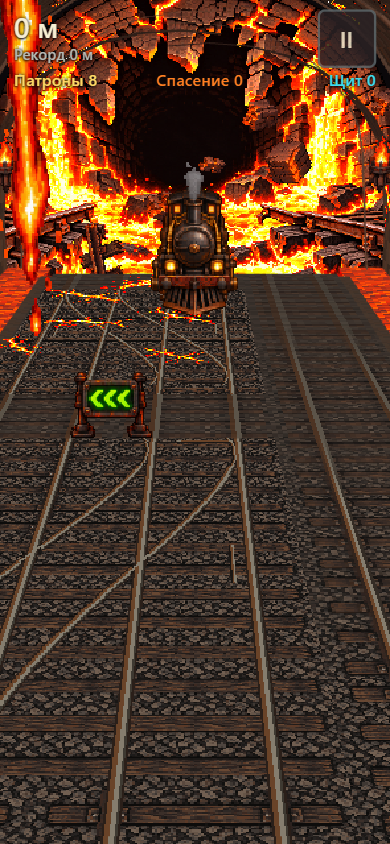
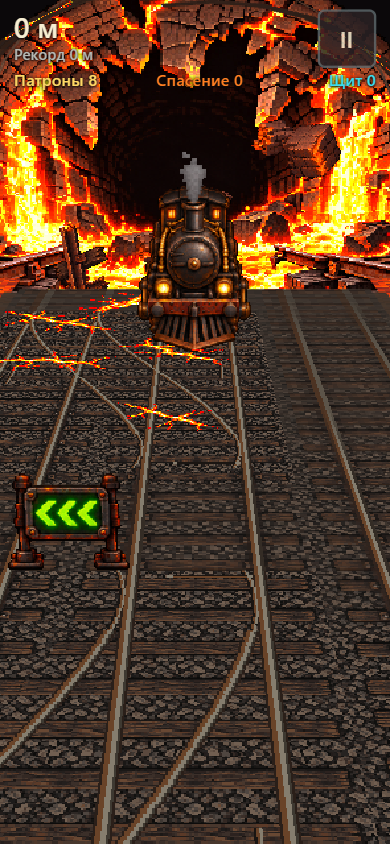
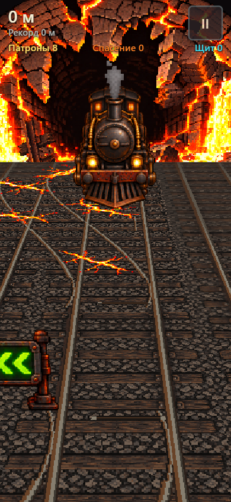
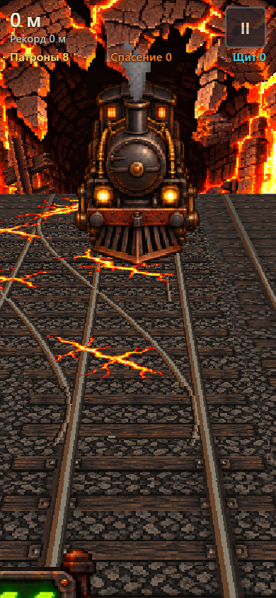

<!doctype html>
<meta charset="utf-8">
<title>Варианты камеры</title>
<style>
  body { margin: 0; background: #111; color: #eee; font: 16px sans-serif; }
  main { display: flex; gap: 10px; padding: 10px; }
  figure { margin: 0; }
  img { display: block; width: 390px; height: 844px; }
  figcaption { padding: 6px 0; }
</style>
<main>
  <figure><figcaption>сейчас</figcaption></figure>
  <figure><figcaption>?cam=1.3</figcaption></figure>
  <figure><figcaption>?cam=1.6</figcaption></figure>
  <figure><figcaption>?cam=2</figcaption></figure>
</main>
